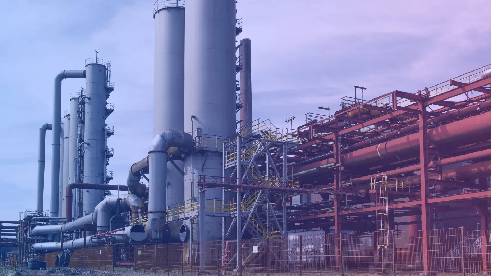

Project Strengthens Digital Collaboration and Data Management Across Energy and Cement Businesses

August 22, 2025 – CS TECH Ai (Ceinsys Tech Limited) has received a service order for the implementation of a Common Data Environment (CDE) setup across the Energy Engineering cluster, covering nine businesses, along with the Cement business segment. The project also includes nine months of Hypercare support to ensure smooth adoption, operational stability, and continuous assistance after implementation.
The order, dated August 21, 2025, is valued at ₹2.24 crore and represents an important milestone for the company’s Product Services division. The project highlights CS TECH Ai’s growing role in delivering digital transformation solutions for large corporates and conglomerates operating in the infrastructure sector.
A Common Data Environment is a centralized digital platform that enables organizations to manage, share, and collaborate on project-related data in a secure and structured manner. It improves communication between teams, reduces data duplication, minimizes errors, and ensures that stakeholders have access to accurate and updated information throughout the project lifecycle.
The implementation of a CDE is particularly valuable for complex industries such as energy engineering and cement manufacturing, where multiple teams, large datasets, and critical workflows need to be coordinated efficiently. By enabling streamlined document management, workflow automation, and real-time collaboration, the platform can improve productivity, operational transparency, and project execution efficiency.
The inclusion of Hypercare support for nine months reflects the company’s focus on ensuring successful deployment and long-term usability of the system. This support phase is expected to help users adapt to the platform effectively while addressing operational challenges during the transition period.
The order demonstrates CS TECH Ai’s expanding capabilities in enterprise digital solutions and infrastructure-focused technology services. It also reinforces the company’s commitment to supporting organizations with intelligent, scalable, and future-ready digital ecosystems.